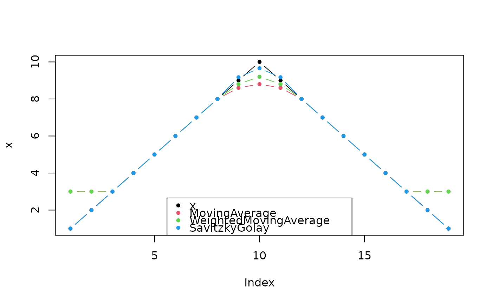

This function smoothes a numeric vector.
Value
smooth: A numeric of the same length as x.
coefMA: A matrix with coefficients for a simple moving average.
coefWMA: A matrix with coefficients for a weighted moving average.
coefSG: A matrix with Savitzky-Golay-Filter coefficients.
Details
For the Savitzky-Golay-Filter the hws should be smaller than
FWHM of the peaks (full width at half maximum; please find details in
Bromba and Ziegler 1981).
In general the hws for the (weighted) moving average (coefMA/coefWMA)
has to bemuch smaller than for the Savitzky-Golay-Filter to conserve the
peak shape.
Functions
coefMA(): Simple Moving AverageThis function calculates the coefficients for a simple moving average.
coefWMA(): Weighted Moving AverageThis function calculates the coefficients for a weighted moving average with weights depending on the distance from the center calculated as
1/2^abs(-hws:hws)with the sum of all weigths normalized to 1.coefSG(): Savitzky-Golay-FilterThis function calculates the Savitzky-Golay-Coefficients. The additional argument
kcontrols the order of the used polynomial. Ifkis set to zero it yield a simple moving average.
References
A. Savitzky and M. J. Golay. 1964. Smoothing and differentiation of data by simplified least squares procedures. Analytical chemistry, 36(8), 1627-1639.
M. U. Bromba and H. Ziegler. 1981. Application hints for Savitzky-Golay digital smoothing filters. Analytical Chemistry, 53(11), 1583-1586.
Implementation based on: Steinier, J., Termonia, Y., & Deltour, J. (1972). Comments on Smoothing and differentiation of data by simplified least square procedure. Analytical Chemistry, 44(11), 1906-1909.
See also
Other noise estimation and smoothing functions:
noise()
Examples
x <- c(1:10, 9:1)
plot(x, type = "b", pch = 20)
cf <- list(MovingAverage = coefMA(2),
WeightedMovingAverage = coefWMA(2),
SavitzkyGolay = coefSG(2))
for (i in seq_along(cf)) {
lines(smooth(x, cf[[i]]), col = i + 1, pch = 20, type = "b")
}
legend("bottom", legend = c("x", names(cf)), pch = 20,
col = seq_len(length(cf) + 1))
